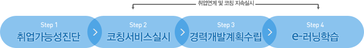

Demo of online career coaching services are largely composed of four steps.
To proceed to the next step "Next" Click on it, please.

- 취업가능성진단
- 1-1. 취업기본진단
- 학력, 전공, 자격증 등 취업 시 필요한 기본 조건에 대한 진단
- 1-2. 직업의식진단
- 직업활동에 대한 태도와 가치관에 대해 진단
- 1-3. 취업적성검사
- 개인별 소질을 알아보기 위한 것으로 검사 결과에 따라 적합한 직업 추천
- 1-4. 직업역 량진단
- 희망하는 직업에서 요구하는 역량대비 개인의 보유수준 판단
- 1-5. 종합진단결과 확인
- 취업가능성진단 결과에 대한 Report 확인
- 코칭서비스실시
- 온라인커리어상담사와 지속적인 상담을 통해 수립한 계획을 실행하며, 본인의 경력개발 실적을 관리함
- 경력개발계획수립
- 취업가능성진단 결과를 바탕으로 교육, 자격증 및 기타 경력개발계획 수립
- e-러닝학습
- 경력개발계획에서 선택한 e-러닝 학습실행